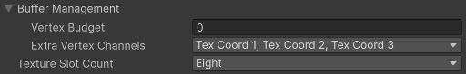

Shader Setup
Requirements and limits of GPU drawing in UI Toolkit.
The Shader resolver draws with a GPU shader. Nothing is tessellated: each icon is one quad, and the fragment shader works out the shape per pixel. Edges are crisp at any size, and animating an icon only sends a few numbers to the GPU.
Required setup
- URP, in a Unity version with custom materials in UI Toolkit (6000.3 or newer).
- In the PanelSettings asset, under Buffer Management, set Extra Vertex Channels to include TexCoord1, TexCoord2 and TexCoord3. Each channel adds 16 bytes to every vertex of that panel, so the three add 48 bytes. Leave the other fields as they are.

If the setup is missing, an element set to Shader draws nothing and logs a warning. Automatic checks the setup and falls back to another resolver instead.
Draw calls
Shader-drawn elements in the same group share one mesh, and because they share one material they draw in one call, whatever their artwork. By default a group is a parent element, and you can define a bigger one with VectorBatchGroup. Ten different .vpaint files in one grid are still one call, with no texture atlas needed. One mesh holds about 16,000 icons.
In UI Builder the shared mesh shows up as a VectorShaderLayer element next to the icons. It is created for you.

What it draws
Solid fills and strokes, linear and radial gradients (up to 8 stops), freeform gradients, gradient strokes, miter, bevel and round joins, round and butt caps, dashes, compound paths (even-odd), clip groups, the three scale modes and uv cropping. Records move points, change colours, stroke width and opacity (up to 8 records per artwork).
Limits
- Not drawn: live effects, patterns, text, images, symbols, brushes and blend modes. A warning is logged when the compiler meets one it can detect.
- Dashes have flat ends, whatever the cap setting. Radial gradients ignore the focus offset.
- The element's own opacity, visibility and transform animation do not apply, because the icons share one mesh.
- The cost grows with the number of pixels an icon covers and its outline segments, not with the number of icons. The cost meter in the painter rates it.